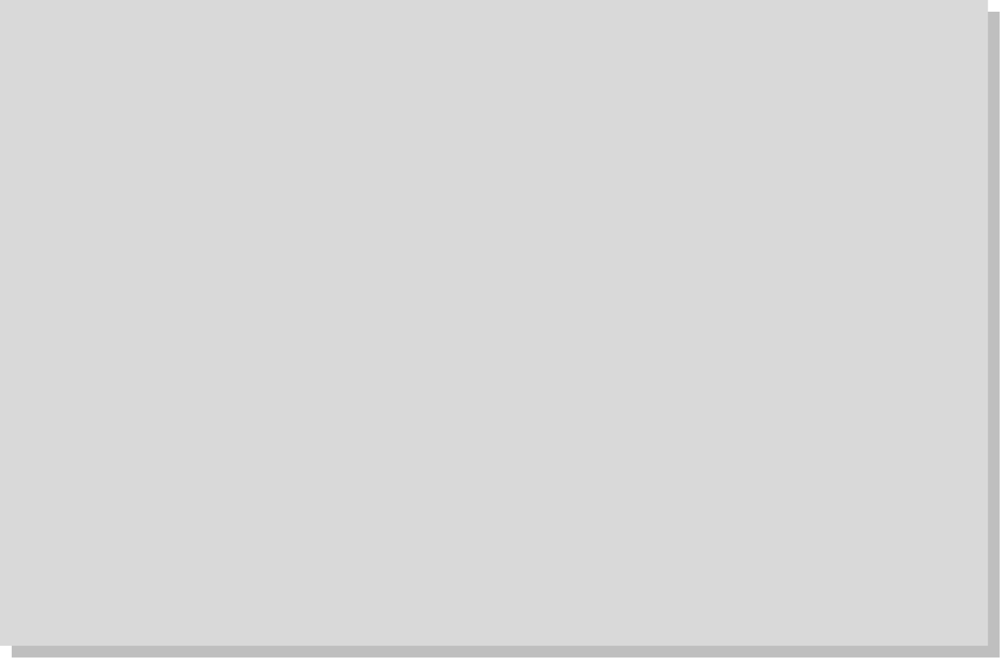
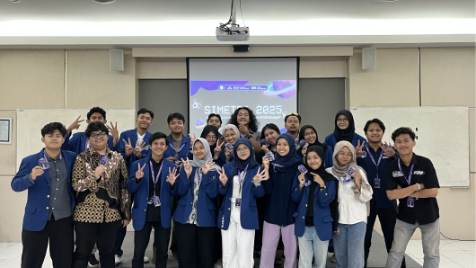
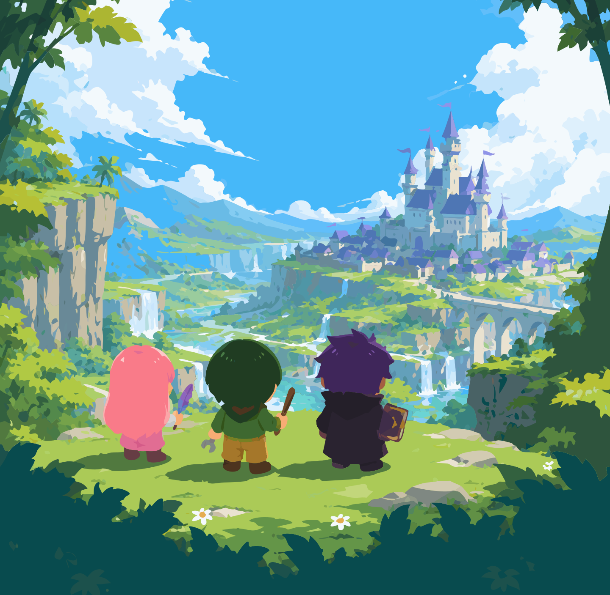
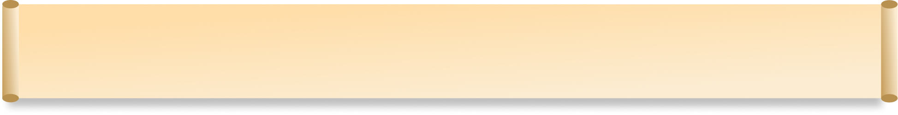
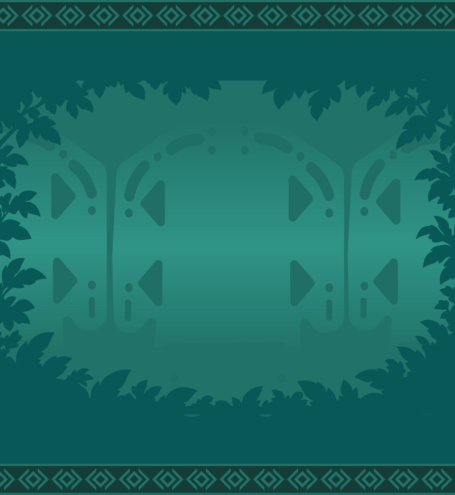
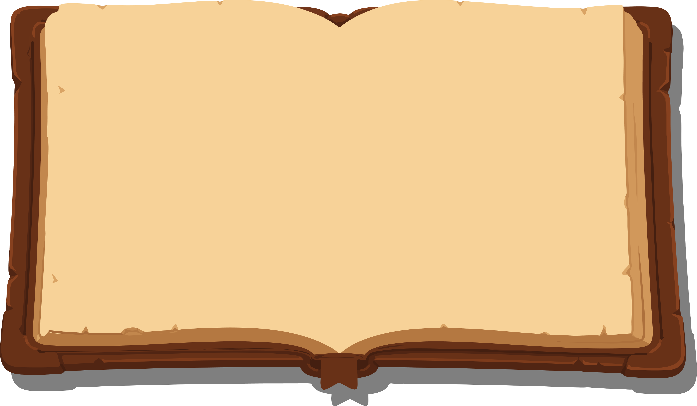

DOKUMENTASI






Asistensi Simetri Kuy!


ASIK (Asistensi SIMETRI Kuy) merupakan program pelatihan dan pembekalan bagi mahasiswa yang akan menjadi mentor dalam kegiatan SIMETRI. Kegiatan ini dirancang untuk memberikan pemahaman materi,
metode pengajaran, serta simulasi mentoring agar mentor siap dalam mendampingi peserta. ASIK tidak hanya berfokus pada penguasaan materi, tetapi juga pada pengembangan soft skills seperti komunikasi, public speaking, teamwork, dan problem solving.

